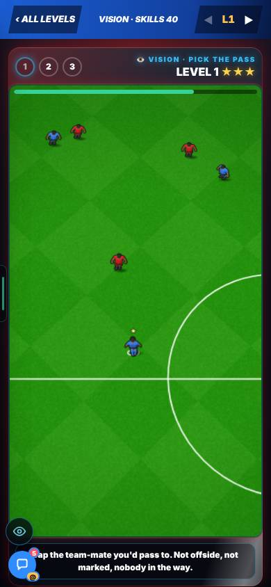
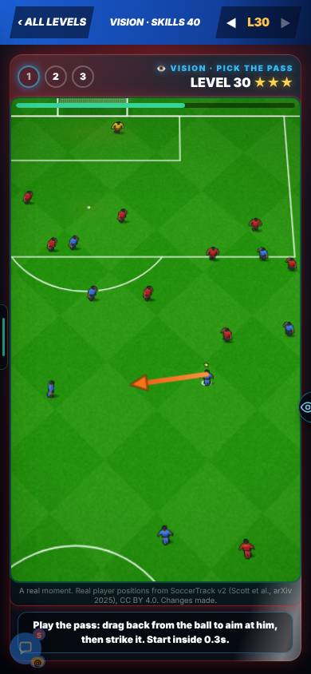
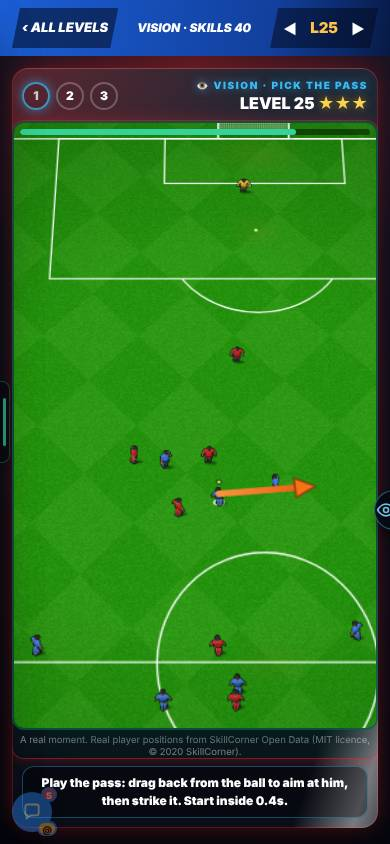
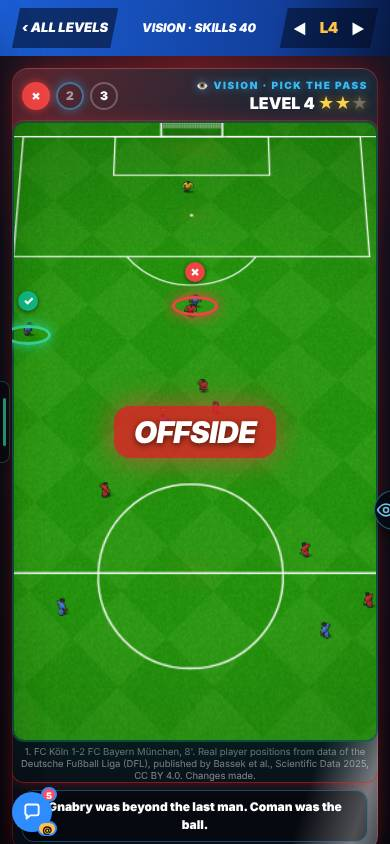
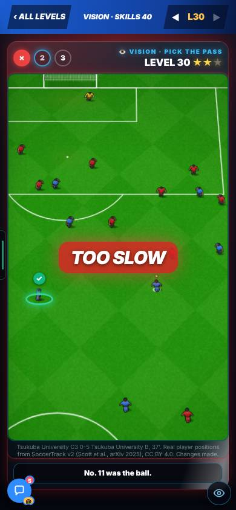
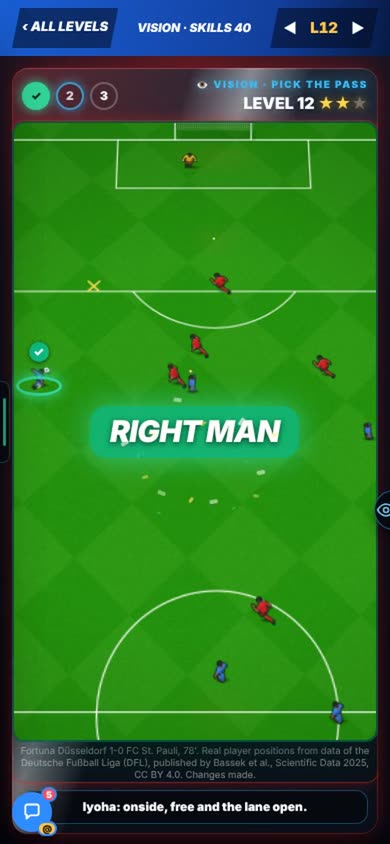

On the Harry branch, not live yet.
Overnight round, 20 Oct 2026. In Admin → Patch notes this is v0.76.
Harry, 20 Oct: “the vision skill is horrendous. It’s cluttered, and the skill gap doesn’t increase. I don’t like the line on the pitch.”
Not in the report.
Vision is rebuilt from the start. Each try is a real moment from a tracked match. 263 real passes (DFL, SkillCorner and SoccerTrack), plus the team’s own drawn chances on levels 1, 2 and 10. It is drawn in the real match’s new view. No guide line. Only the men who matter are drawn. The two deepest defenders always stay, so the offside line is exact.


Harry, 20 Oct: “Who should I pass to in this scenario? Have someone offside.”
Not in the report.
Three traps: a man who is offside, a lane that is cut, a man who is marked. The right man is worked out with the engine’s own rules. Every pass in every picture was played 24 times on the engine: the right man was reached at least 80% of the time, a cut lane under 40%.
A drawing, not a still. It shows the four kinds of man. The green one is the only right answer.
Checked on the engine: 30 of 30 passes to an offside man ended OFFSIDE. 240 of 240 good passes found the right man. 119 of 120 passes into a cut lane were lost.
Harry, 20 Oct: “Why are we just tapping? … early on you tap, then you actually have to kick the ball inside 0.3 seconds.”
Not in the report.
Levels 1 to 9 are a tap, and the time gets shorter. From level 10 you kick the pass: the real drag and strike, and you must start the kick in time. The engine judges the kick.
Less time at every step. From level 28 it is 0.3 s, the number Harry asked for.

Look for: the kick at level 12. A drag back from the ball, the strike, then RIGHT MAN with confetti. The clip is 9 seconds long, on a phone-size screen.
Not in the report.
One word, then one line. RIGHT MAN, OFFSIDE, CUT OUT, MARKED, NOT THE BALL, MISPLACED or TOO SLOW. The right man gets a green ✓ ring. Your pick gets a red ✗. A real picture names its match and minute.



Not in the report.
Going through levels 1 to 30 now shows more different pictures. An ordinary picture comes back on at most 3 levels.
Measured over levels 1 to 30, 90 tries.
Harry, 20 Oct: “the skill gap doesn’t increase”.
Not in the report.
The pass rate now falls the whole way. The steepest step is level 14 (87%) to level 16 (51%). Every level’s numbers can be softened in the training editor.
How often a modelled good player picks and kicks the right man on the first try. Kicks were played on the engine. Not a person.
The 13 offside levels draw on just 5 real offside moments. One of them comes back on 6 levels.
Not in the report.
Open. Q4 on the Patch Notes Questions page: add drawn offside pictures?
The 0.3 s kick start was only seen on a test browser at 390 × 844.
It was seen only in a test browser.
Harry to try on his phone. Every level’s numbers can be softened in the editor.
First-try pass rate, a modelled good player, kicks played on the engine.
The steepest step is level 14 to level 16.
Time to answer. Tap levels 1 to 9: 4.0 s down to 1.3 s. Kick levels: 1.8 s at level 10, 0.3 s from level 28.
Pictures. 263 real passes (DFL, SkillCorner, SoccerTrack v2) plus the team’s drawn chances on levels 1, 2 and 10. Levels 1 to 30 show 45 different pictures in 90 tries (32 before). An ordinary picture comes back on 3 levels at most (7 before).
Checked on the engine. 30 of 30 passes to an offside man ended OFFSIDE. 240 of 240 good passes found the right man. 119 of 120 passes into a cut lane were lost. Every pass in every picture was played 24 times (right man reached at least 80%, cut lane under 40%).
Not changed. No engine or drift file. Credits for the real data are shown under each real picture.
Level 12: a drag, a strike and RIGHT MAN. 9 seconds, on a phone-size screen. It is under “Levels 1 to 9: tap the man. From level 10: kick the pass.” above.